Project 5: Face detection with a sliding window
The purpose of this project is to try face recognition. The pipeline of image recognition can be summarized as below:Extract features: To some extent, get_positive features(), get_random_negative_fetures()
, mine_hard_negs() are basically the same implementation. What they do is to extract hog features from different
input images and then return NxD feature matrix. N is number of total sample points and D is feature dimension.Train classifier: Train a linear SVM classifier to find out whether a face is included in
the hog cell.Detect faces with sliding window: Apply the trained classifier on each window and output windows
that contain faces.
1. get_positive features(), get_random_negative_fetures()
Both functions do the hog feature extraction jobs. Their difference of implementation are mostly based on the input.
For the positive ones, the training images are carefully cropped and contain exactly one face in each image. So what
we need to do is to simply compute a hog vector for each image. On the other hand, negative features are somehow
infinite. So we need to randomly choose some regions and extract hog features up to some limited number.

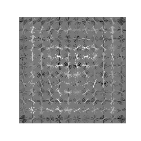
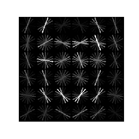
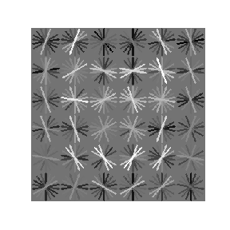
2. train a linear classfier
With feature vectors extracted above, we can train a linear SVM to decide whether the input cropped region is a face.
The regularization factor C is important, here we try magnitude ranging from 5e-4 to 5 step e-1 and finally find out
that the default 5e-2 is the best tuning.


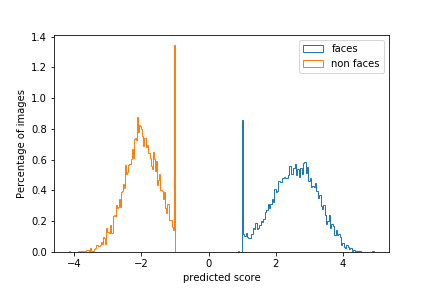
hog cell size = 3
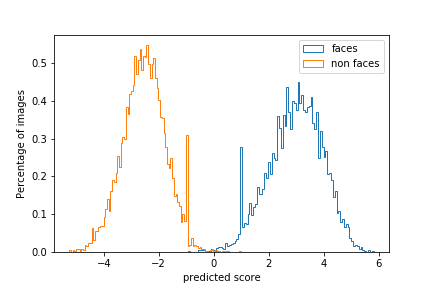
hog cell size = 6
3. Mine hard negatives
The main idea of hard negative mining is that you use the trained classifier to find false-positive examples, and then
include them in your negative training data, so you can train the classifier again to improve the performance. Since the
classifier in step2 is accuarate, in this project it will contribute only a small improvement. In the experiments that I
have run, if cell size=6, hard negative only contains 3 rows with num_examples = 10000, which indicates a really low false
positive rate. The random and mine hard negative training samples will both be used to train linear classifiers and their
performance will be compared below.
4. Detect faces
The idea is that in each scale of HoG feature space, we can step over HoG cell and classify them. With an acceptable confidence,
we pass the bounding box to non_max_suppression_bbox() and return detection boxes. The true location is among these boxes.
The step size here is 1 due to the baseline of accuaracy requirement because a smaller step size will discover more detailed
features. The scale factor will be set at 0.85 and therefore the search will be more exhaust. A 0.75 factor will reduce the AP
value to about 78.2% not desired by the threshold 80%. And I also set a maximum iteration number = 100 to limit the running
time. Another tuning parameter is the threshold of the confidence from the classifier, which will be discussed in
section5.
After running the detection function, the PR curve and ROC curve can be plotted.
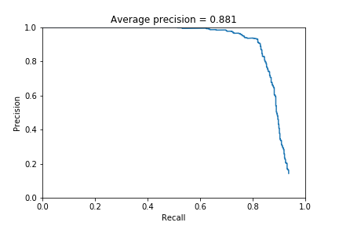
PR curve
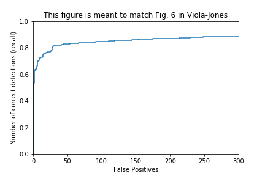
ROC curve
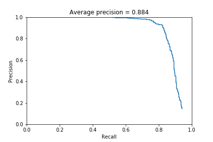
PR curve
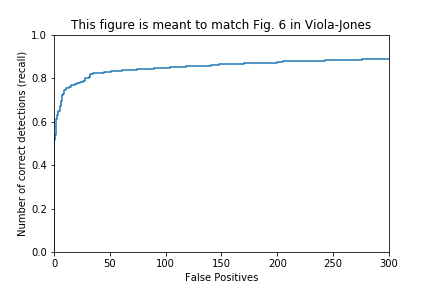
ROC curve
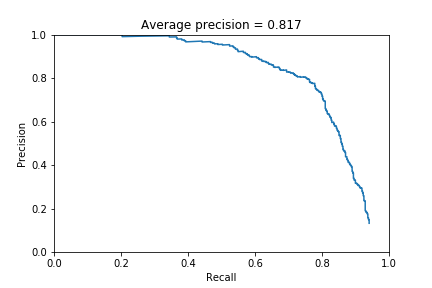
PR curve
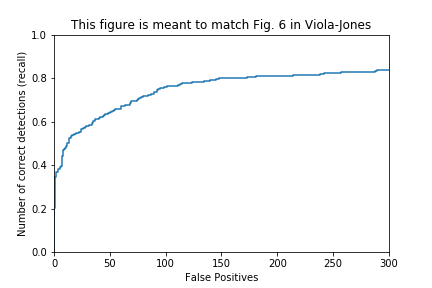
ROC curve

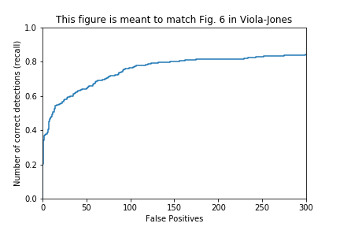
ROC curve
5. Result visualization with ground truth
With the ground truth labeling, we can visualize the detection results.


6. Extra scene
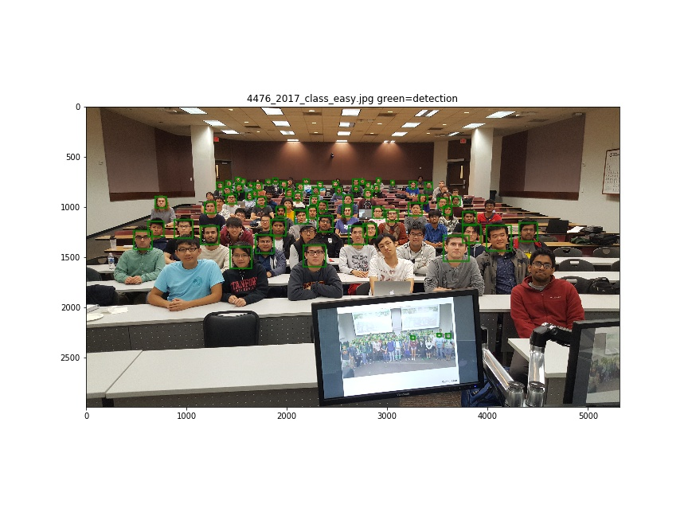
(a) 4476_2017_class_easy
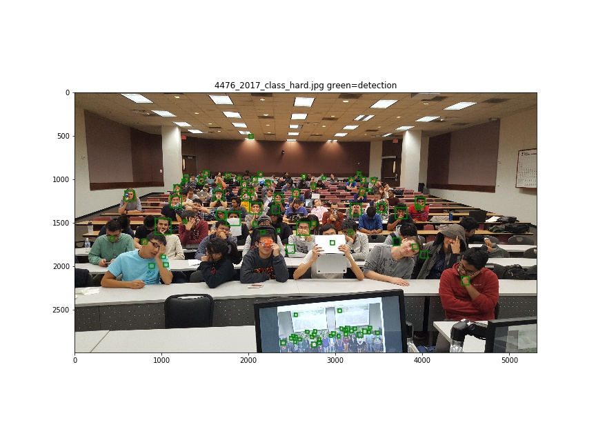
(b) 4476_2017_class_hard
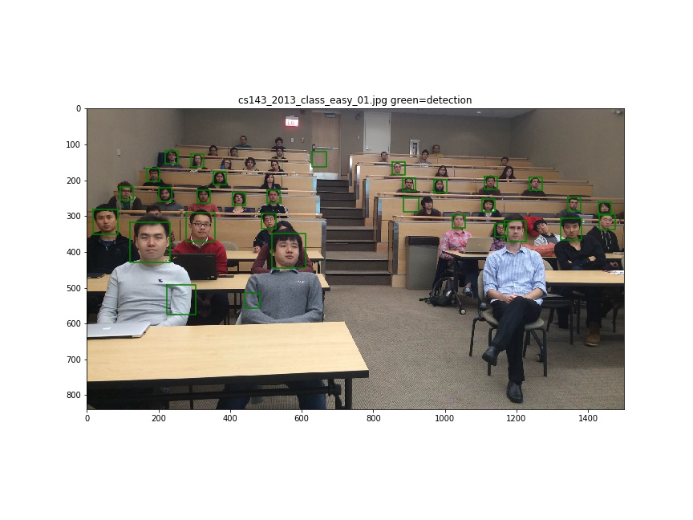
(c) cs143_2013_class_easy_01
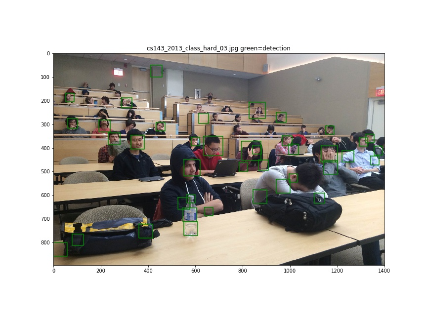
(d) cs143_2013_class_hard_03
7. Extra Credit
There are plenty classification schemes, such as nearest neighbor, which is unsupervised
and a deep neural network, which is a high dimensional nonlinear classifier. The basics of
LinearSVC is that it can project the features into high dimension space and use linear plane
to separate them. Hence like in project4, we can try a nonlinear classfier. So we try the
logistics classifier, which is the most powerful and explainable nonlinear model. It can be
applied in regression but also classification. The principle can be found here: https://www.stat.cmu.edu/~cshalizi/uADA/12/lectures/ch12.pdf.
Here we just test its performance.

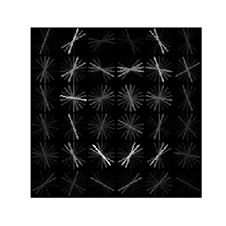
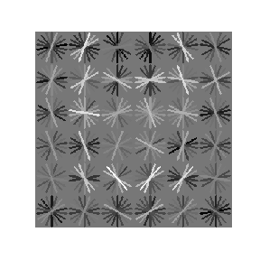
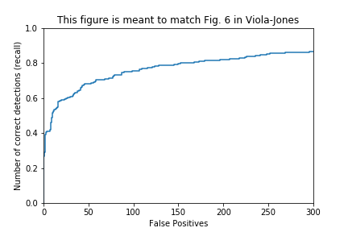
(c) ROC curve
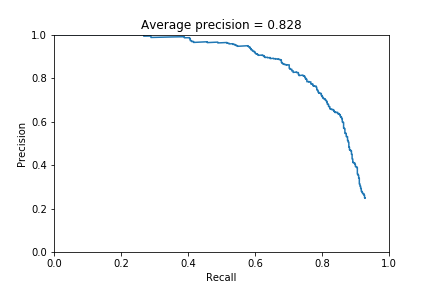
(d) PR curve